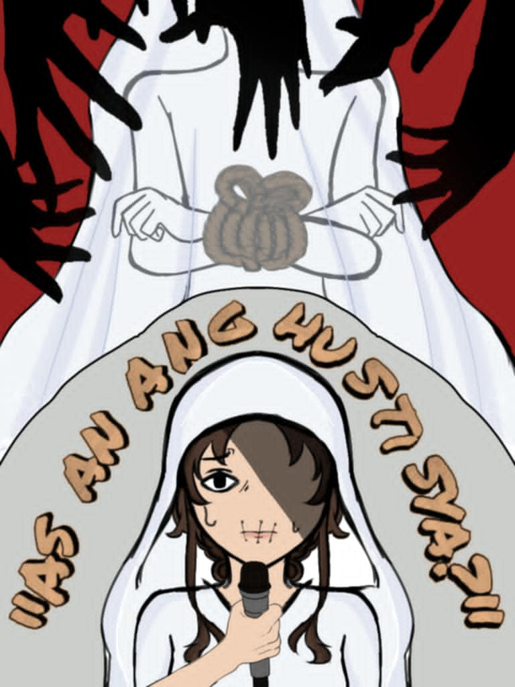

- 
Sinasabing ang pagpapakasal ay isa sa pinakamasayang araw sa buhay ng isang babae. Ngunit paano kung ang lalaking papakasalan mo ay ang taong nang-abuso sa'yo? Isa sa mga hamon na kinahaharap ng mga biktima ng pang-aabuso sa Maguindanao ay ang tradisyong sinusunod ng kanilang tribo na hindi sakop ng batas, dahil sa kalayuan nito sa mga gobyernong institusyon. Dahil dito, walang kakayahan ang mga pamilya na maghabol ng kaso o magsampa ng report dahil sa kahirapan at kakulangan sa pondo. Ang dokumentaryong 'Kapalit ng Katahimikan' ni Kara David ay naglalahad ng salaysay tungkol sa sitwasyon ng mga biktima ng rape na hindi nabigyan ng tamang hustisya.
Karanasan ng Matinding Pang-aabuso: Emosyonal, Pisikal, at Sekswal
Ang dokumentaryong 'Kapalit ng Katahimikan' ni Kara David ay nagbunyag ng masaklap na realidad ng emosyonal, pisikal, at sekswal na pang-aabuso sa Maguindanao, kung saan ang mga biktima ay pinipilit manahimik sa ngalan ng kapayapaan. Sa halip na hustisya, ang ilan sa kanila ay binabayaran ng salapi o hayop, at may iba pang napipilitang pakasalan ang mga nang-abuso sa kanila. Ang trauma mula sa ganitong karanasan ay may matinding epekto sa mental na kalusugan, relasyon, at kinabukasan ng mga biktima. Habang ang takot, kahihiyan, at victim-blaming ay patuloy na pumipigil sa kanila na magsalita, ipinakita sa dokumentaryo ang mahalagang papel ng mga social worker na nagbibigay ng emosyonal at legal na suporta, at nagsisilbing simbolo ng pag-asa sa isang lipunang tila tinatanggap ang pananahimik sa pang-aabuso.
Impact ng Kultura
Sa mga lugar na malayo sa sentro ng gobyerno tulad ng South Upi, Maguindanao, karaniwan ang pagpapatupad ng areglo—isang kasunduan o kompromiso na ginagawa sa pamamagitan ng mga tribal council at barangay upang malutas ang mga isyu sa komunidad. Ang mga tribal council ang may responsibilidad na magpatupad ng kaayusan at pangalagaan ang mga katutubong tradisyon. Ayon kay Carmelita Mabologan, dating Indigenous People Mandatory Representative (IPMR) ng Barangay South Upi, wala sa kanilang kultura ang konsepto ng rape. Sa pananaw nila, kapag nais ng isang lalaki ang isang babae, hindi na niya kinakailangan pang dumaan sa pormal na panliligaw. May kasabihan sila na nagsasabing, "If a man is deeply in love with a woman, but he can't get her in a nice way, then he'll get her in a tough way. And the result of that is what they call rape." Dito, itinuturing na kung labag sa kalooban ng babae ang aksyon ng lalaki, kinakailangan magbayad bilang kapalit ng insidenteng iyon, ayon sa hinihingi ng babae o ng kanyang pamilya.
Improper Justice
"Many choose silence out of fear, out of shame, out of slow justice. So what becomes the rights of the victims?" Ayon sa datos ng PNP noong 2023, mahigit 10 libo ang biktima ng rape sa Pilipinas, nangangahulugang isang babae ang nagagahasa kada oras. Masakit pa, hindi lahat ng biktima ay nakakareport ng nangyari sa kanila. Marami ang nananahimik na lang, takot sa kahihiyan at epekto ng nangyari sa kanila. May iba ring ipinapakasal sa kanilang rapist upang mabawasan ang kahihiyan. Dahil naniniwala ang ilan na kapag na-devirginized na ang isang babae, parang hindi na siya "malinis." Kaya't ipinipilit na silang ipakasal sa nanggahasa sa kanila. Ngunit, asaan ang hustisya? ito ba talaga ang solusyon? Hindi ba’t magpapatuloy lang ang pang-aabuso?
Invalidation
"The painful truth is, that for the sake of peace in the community, the victim must choose silence." Sa lipunang pinahahalagahan ang imahe ng pagkakaisa at katahimikan, madalas nalilibing ang mga boses ng biktima. Sa kabila ng hangarin ng komunidad na mapanatili ang "kapayapaan," ang nararamdaman, karanasan, at pagkatao ng biktima ay nababalewala. Ang ganitong pananaw ay hindi lamang nagpapakita ng kawalan ng malasakit, kundi nagiging karagdagang sugat sa emosyonal at mental na kalagayan ng mga biktima. Habang ang layunin ng "kapayapaan" ay magtaguyod ng kaayusan, hindi nito dapat ipagwalang-bahala ang karanasan ng bawat isa. Ang mga boses ng biktima ay kailangang marinig upang mapanumbalik ang kanilang dignidad at makatagpo ng tunay na paggaling. Mahalaga na may espasyo ang mga biktima upang ipahayag ang kanilang nararamdaman at karanasan, na magsisilbing hakbang para sa isang mas malusog na komunidad.
The Impact of Sexual Abuse on Victims
"The victims will bear their wounds for the rest of their lives" Ipinakita ng dokumentaryong ito ang emosyonal na pagdurusa, kawalan ng tiwala sa sarili at sa iba, pati na rin ang pisikal at mental na suliranin ng mga biktima. Ang trauma na dulot ng pang-aabusong sekswal ay nagpapalalim sa kanilang paghihirap at madalas ay may kasamang takot at kahihiyan. Ang pagtahimik sa kanilang mga karanasan ay nagiging sanhi ng mas malalim na sugat, na nagiging hadlang sa kanilang emosyonal na paggaling at sa pagbuo ng isang mas makatarungan at maligaya na lipunan.
Sa kabuuan, ang dokumentaryong "Kapalit ng Katahimikan" ni Kara David ay nagpapakita ng matinding epekto ng emosyonal, pisikal, at sekswal na pang-aabuso sa mga biktima sa Maguindanao. Ang takot, kahihiyan, at isang kultura ng pananahimik ay nagpapahirap sa kanila upang magsalita at humingi ng hustisya. Sa mga lugar kung saan nangingibabaw ang tradisyunal na mga sistema tulad ng areglo, ang biktima ay kadalasang nawawala ang pagkakataon na maghanap ng tamang katarungan, at ang kanyang karanasan ay binabalewala. Ang mga boses ng mga biktima ay patuloy na pinipigil, at sa kabila ng pagsasabing ang layunin ay kapayapaan, ito ay nagiging sanhi ng mas malalim na sugat sa kanilang mental at emosyonal na kalusugan. Upang mapanumbalik ang tunay na hustisya at kapayapaan, mahalaga ang pagbibigay espasyo sa mga biktima.